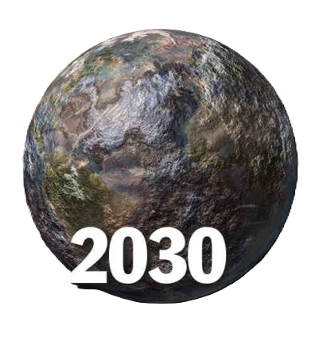
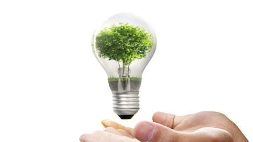
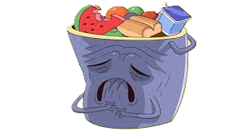
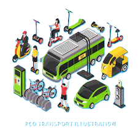

Cambio Climatico
¿Quieres ayudar a las personas a concientizarse sobre el cambio climatico?
Aqui te contamos como hacerlo
¿Que es el cambio Climatico?
El cambio climático se refiere a los cambios a largo plazo en las temperaturas y patrones climáticos, impulsados principalmente por actividades humanas desde el siglo XIX, como la quema de combustibles fósiles. Esto genera gases de efecto invernadero que atrapan el calor en la atmósfera, elevando las temperaturas globales.
¿Como puedo ayudar a revertir el cambio climatico?
Reducir el consumo: Comprar menos, comprar de segunda mano, reparar lo que se pueda y reciclar.
Consumir de forma sostenible: Comprar local y de forma sostenible, y no desperdiciar alimentos.
Transportar de forma sostenible: Usar el transporte público, la bicicleta, el patinete, o el tren para viajes más largos.
Cuidar el agua: Darse una ducha en lugar de un baño, y ahorrar agua

INFO
{% if button_python%} {% endif %}¿Porque el cambio climatico nos afecta?
Salud:
Temperaturas altas y bajas pueden afectar la salud de las personas. Por ejemplo, las temperaturas bajas pueden provocar enfermedades virales como el resfrío, mientras que las altas pueden perjudicar a los niños y las personas mayores.
Agricultura:
El cambio climático afecta la capacidad de cultivar alimentos. Por ejemplo, el aumento de las temperaturas y la erosión del suelo reducen la productividad agrícola.
Especies:
El cambio climático pone en riesgo la supervivencia de las especies terrestres y oceánicas. Se estima que la extinción de especies es 1000 veces mayor en la actualidad que en cualquier otra época de la historia humana.
Fenómenos:
El cambio climático agrava fenómenos como la erosión, la desertificación, las inundaciones, los corrimientos de tierras y la salinización
Seguridad:
El cambio climático puede afectar la seguridad de las personas. Por ejemplo, en México se espera que el cambio climático aumente la intensidad de las sequías, lluvias y ciclones tropicales.
Justicia Climatica:
Justicia climática Las personas que menos han contribuido al cambio climático son las que se ven afectadas de forma desproporcionada.